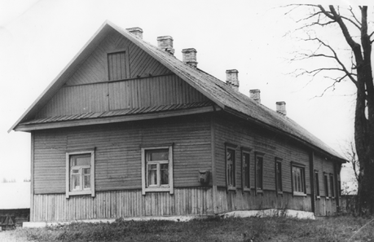

Клясціцы ў XX ст.
1905 г. :
Уладальнікамі маёнтка Клясціцы з фальваркамі лічыліся браты Аляксандр і Фёдар Андрэевічы Будбергі.
Студзень 1918 г. :
У вёсках Сакалішча, Клясціцы былі створаны пункты па фарміраванні Чырвонай Гвардыі.
Клясціцкая, Мікалаеўская, Юхавіцкая воласці былі далучаны да РСФСР.
У Клясціцкай воласці Дрысенскага павета было 94 населеныя пункты, 928 двароў, 3999 жыхароў, з іх 1802 мужчын, 2197 жанчын.
7 сакавіка 1924 г. :
Віцебская губерня была далучана да БССР.
17 ліпеня 1924 г. :
Паводле пастановы ЦВК БССР “Аб адміністрацыйна-гаспадарчым дзяленні БССР” у складзе Полацкай акругі быў створаны Расонскі раён.
Расонскі
раён быў падзелены на 10 сельсаветаў:
Альбрэхтаўскі, Гарбачэўскі, Дзмітраўскі, Кляс-ціцкі, Мілавіцкі, Парэцкі, Руднянскі, Сакалішчанскі, Сяляўшчынскі і Юхавіцкі.
Быў утвораны Клясціцкі сельскі савет.
1924 г. :
У Клясціцах адкрыта хата-чытальня.
1926 г. :
Узніклі Клясціцкае крэдытнае сельскагаспадар-чае таварыства, хлебапякарня.
1930 г. :
Арганізаваны калгас “Чырвоны партызан”.
1931 г. :
У Клясціцах арганізавана машынна-трактарная станцыя. Праводзіцца адзін з першых кірмашоў у раёне.

1938 г. :
Расонскі раён увайшоў у склад створанай Віцебскай вобласці.

1939 г. :
Разбураны помнік у гонар перамогі пад Клясціцамі і царква Святых Апосталаў Пятра і Паўла.
1941-1943 гг. :
Вёска была акупіравана нямецка-фашысцкімі захопнікамі. Разгортваецца партызанская барацьба.

5 красавіка 1943 г. :
Адбылася
міжраённая камсамольская канферэнцыя з
удзелам камандзіраў і камісараў партызанскіх брыгад і атрадаў.
9 снежня 1943 г. :
Райвыканкам і райком партыі прынялі рашэнне аб аднаўленні дзейнасці калгасаў у вызваленай частцы раёна.
Снежань 1943 г. -чэрвень 1944 г. :
Фашысты правялі супраць партызанскіх брыгад 19 буйных карных аперацый.
9 снежня 1942 г. :
Загінуў Уладзімір Антонавіч Хамчаноўскі, намеснік камандзіра партызанскага атрада імя Шчорса.
З 29 населеных пунктаў пад час вайны поўнасцю былі знішчаны 13. З іх 12 вёсак адноўлены ў пасляваенны перыяд. Вёска Велле знішчана назаўсёды.
1951 г. :
У Клясціцах пабудаваны адзін з трох у раёне маслаказеінавы завод.
1958 г. :
Пабудаваны сельскі дом культуры.
1959 г. :
Здадзены ў эксплуатацыю кароўнік у калгасе “Чырвоны партызан”.
1 мая 1959 г. :
Дала
ток Клясціцкая ГЭС на р. Нішча. Яго атрымалі вёскі Кавалі, Маркова, Забалоцце,
Сінск, Лапешчына, Казімірова, Пушча.
1959 г. :
У Клясціцах пабудавана швейная майстэрня, магазіны прамысловых тавараў, харчовых, гаспадарчых тавараў.
1960 г. :
Старшынёй калгаса “Чырвоны партызан” абраны Марачынскі Станіслаў Іванавіч Колькасць гаспадарак у вёсцы налічвала – 335, па сельсавету – 902.
1961 г. :
Да калгаса “Чырвоны партызан” далучылі калгас імя Варашылава з вёскамі Сяргеева, Лапешчына і Шалашнікі.
1965 г. :
Клясціцкая ГЭС з’яўляецца асноўнай крыніцай энергазабеспячэння ў раёне.
1970 г. :
Пабудавана Клясціцкая трохпавярховая сярэдняя школа.
1972 г. :
Да калгаса “Чырвоны партызан” далучылі калгас “1 мая”, цэнтр якога знаходзіўся ў Сінску.
1975 г. :
Клясціцкай сярэдняй школе прысвоена імя Героя Савецкага Саюза У.А Хамчаноўскага, былога выпускніка школы. Адкрыты школьны музей Народнай славы.
Тэрыторыя сельсавета складае 203 кв. км. Тут пражывае 1998 человек (на 01.01.1981г.).
У вёсцы налічваецца 400 двароў, 987 жыхароў.
